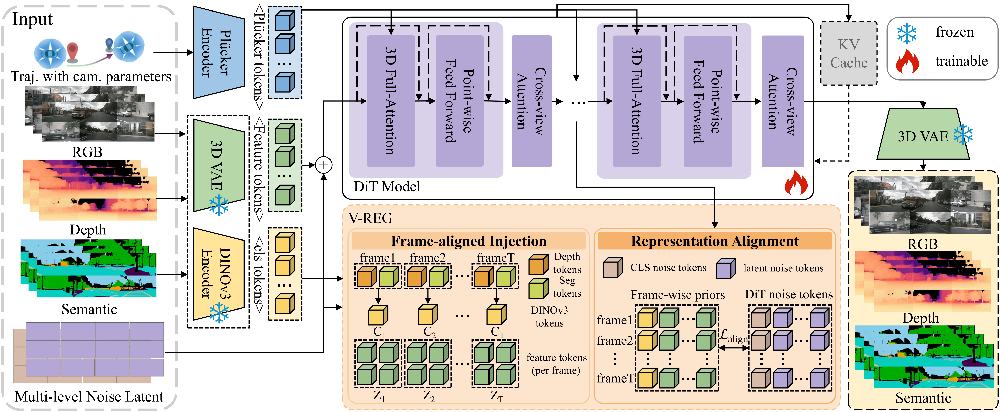

V-REG: Visual Representation Guidance for Training-Efficient Multi-View Driving Video Generation
Anonymous Authors
Abstract
Multi-view driving video generation requires modeling complex temporal, crossview, and multimodal scene structures, leading to expensive task-specific optimization. We propose V-REG, a pretrained visual representation-guided framework that accelerates the adaptation of a multi-view diffusion transformer while largely preserving its original generation pathway. V-REG introduces frame-view aligned representation entanglement and intermediate feature alignment, associating each pretrained representation with the corresponding frame and camera view. Frozen DINOv3 features serve as both conditioning signals and alignment targets during training; at inference, only one-shot condition encoding is retained, and a KV cache mechanism is employed to accelerate multi-frame autoregressive generation by reusing cached attention states from previous frames. Experiments on nuScenes show that V-REG achieves 8.98 FID and 98.75 FVD after 30K taskspecific optimization steps. At the matched FID of 11.3, it requires approximately 4.5 times fewer optimization iterations than the corresponding baseline.
Framework

Qualitative Results